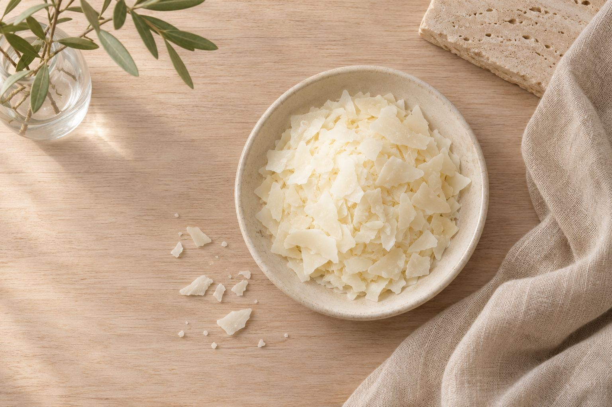

01
Refill, don't replace.
Every candle vessel and diffuser bottle can be refilled. When the wax or oil runs out, you buy the refill and keep the glass.

Fewer things, made well and kept. Six tenets we make by, each with its proof.
Every candle vessel and diffuser bottle can be refilled. When the wax or oil runs out, you buy the refill and keep the glass.
A coconut-and-rapeseed wax blend and a cotton wick, sized to each vessel. A steady flame, an even melt, little soot.

A scent should sit in a room, not shout over it. We blend for the second hour, not the first sniff.

We pour little and often. Stock stays fresh, and every vessel carries a batch number you can trace back to its pour.

Wax, fragrance oil, cotton, glass. Each product lists what is in it and carries its own code, so you always know what you are buying.

We blend and pour in our studio. The glass and ceramic vessels come from makers who do nothing else.